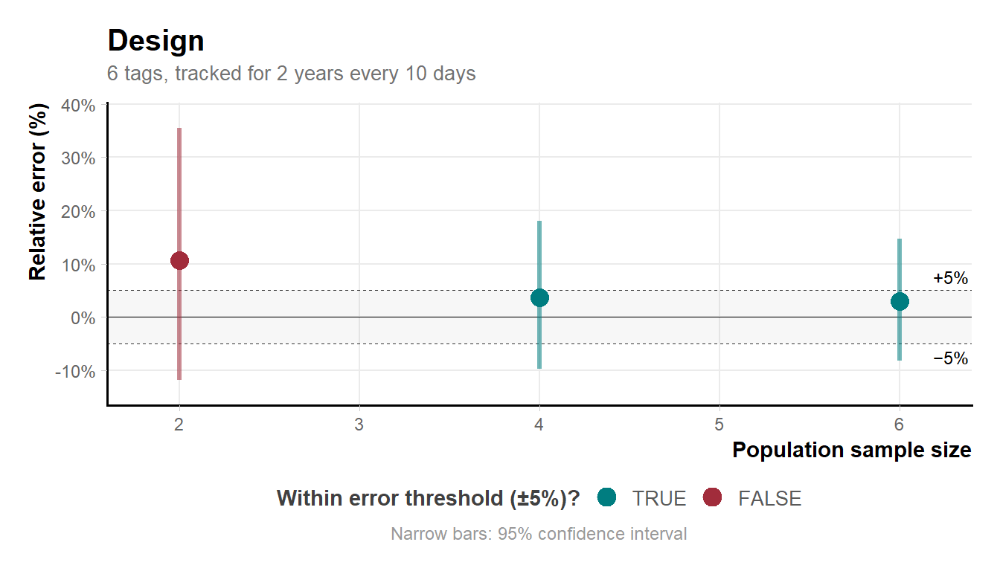
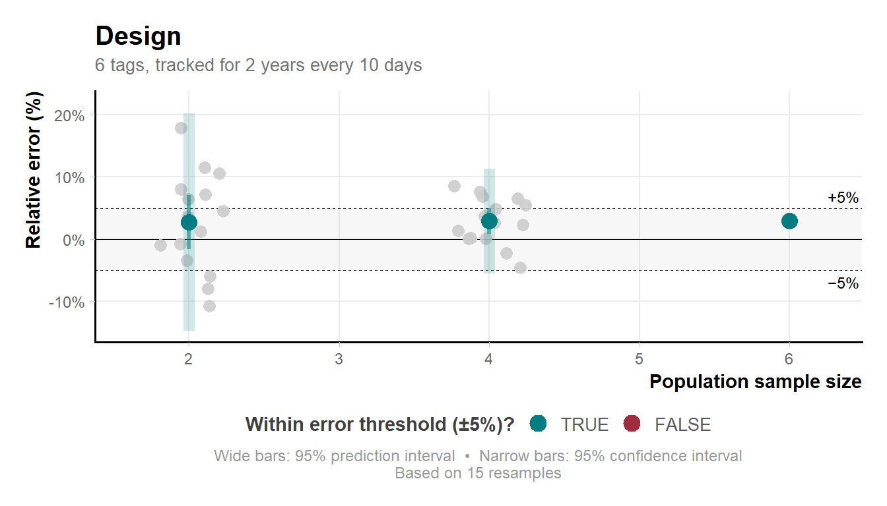
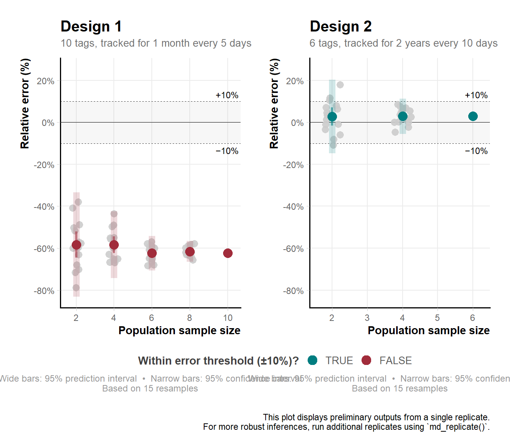
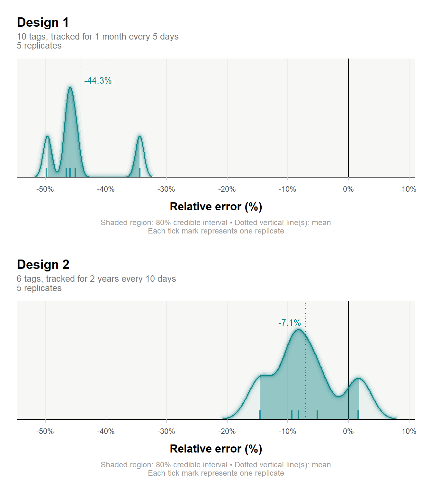

# Install packages from CRAN:
install.packages(c("ctmm", "movedesign"))Guide to study design
How to design an animal tracking project with movedesign (for population-level inferences)
Overview
Planning an animal tracking study often comes down to three practical questions: how many animals should we tag, for how long, and how frequently? Poor design choices can lead to highly uncertain estimates of key movement metrics such as home range area, movement speed, and distance travelled, limiting the reliability of ecological inferences.
movedesign is available as both an R package and a Shiny application and supports the planning and evaluation of movement ecology studies. Under the hood, movedesign simulates tracking datasets using movement models fitted either to existing tracking data or to user-defined movement parameters. For each candidate study design it evaluates how accurately the simulated data recover the true quantity of interest. This framework lets users examine the consequences of different design choices — including the number of tagged individuals (population sample size), study duration (sampling duration), and the time between successive relocations (sampling interval).
This tutorial demonstrates a complete workflow for designing a study to estimate the mean home range area of a tracked population of African buffalo (Syncerus caffer) using empirical tracking data. The examples are configured to run quickly for demonstration; in practice your workflows will be more computationally intensive.
At its core, this tutorial addresses one question: given what we
know about how this species moves, what study design — how many
individuals, tracked for how long, and at what sampling interval —
lets us reliably estimate mean home range area?
The workflow proceeds in six steps:
1
data() / fitting_models()
Load tracking data and fit movement models
2
md_prepare()
Prepare simulation inputs for competing designs
3
md_run()
Run simulations and evaluate design performance
4
md_plot_preview() / md_compare_preview()
Visualise and compare candidate designs
5
md_replicate()
Run multiple replicates for robust outputs
6
md_check() / md_compare()
Diagnose and report final results
Background
movedesign builds on continuous-time movement models fitted via the ctmm package. These models describe animal movement as a stochastic process governed by two key timescales:
τp — position autocorrelation timescale: how long it takes an animal to cross the linear extent of its home range (the average home range crossing time). This timescale is most directly relevant to this workflow — your sampling duration must capture enough home-range crossing events to reliably estimate home range area.
τv — velocity autocorrelation timescale: how long speed and direction remain consistent (the average directional persistence). A short τv describes erratic, undirected movement; a long τv describes an animal moving in sustained, directed bouts.
Both are estimated from empirical data and used to simulate realistic movement data for study-design evaluation.
Data
The built-in buffalo dataset (available within ctmm) contains GPS tracks for six African buffalo (Syncerus caffer) from Kruger National Park, South Africa. This dataset is a named list of telemetry objects, one per individual.
Workflow
Load packages, data and fit models
Load
movedesign for the study-design workflow and
ctmm for the movement models and tracking data. Both must
be installed from CRAN before running the rest of this tutorial.# Load packages:
library(movedesign)
library(ctmm)
# Load the buffalo dataset bundled with ctmm:
data(buffalo)
# Fit movement models (may take several minutes):
models <- fitting_models(buffalo, .parallel = FALSE)fitting_models() performs model selection across candidate movement models — Brownian motion, Ornstein-Uhlenbeck, and their variants — and identifies the best fit for each individual. Save the output with saveRDS() so you can reload it without repeating the computation.
saveRDS(models, "models_buffalo.rds")When complete, models will be a list of lists: one element per individual, each containing that individual’s best-fit movement model.
Prepare simulation inputs
md_prepare() builds the simulation blueprint for a given study design. It validates inputs, checks that movement models are available (fitting them automatically if needed), and extracts the relevant movement parameters (τp, τv). These are combined with your design choices: number of individuals, sampling duration, sampling interval, and grouping structure.
The table below describes every argument in
md_prepare(). Run ?md_prepare() for the
full documentation.| Argument | Type | Description |
|---|---|---|
species |
character | Label for the species; appears in plots and summaries. |
data |
list | Tracking data (list of telemetry objects). |
models |
list | Fitted models, one per individual. |
n_individuals |
integer | Population sample size. |
dur |
named list | Sampling duration: list(value = 1, unit = "month"). |
dti |
named list | Sampling interval: list(value = 5, unit = "days"). |
add_individual_variation |
logical | Draw parameters from the population distribution. |
set_target |
character | "hr" = home range; "ctsd" = speed & distance. |
which_meta |
character | "mean" = population mean; "ratio" = group ratio. |
groups |
named list | (Grouped designs only) assigns individuals to group labels. |
parallel |
logical | Enable parallel processing (strongly recommended). |
We compare two designs, each estimating the population mean home range area under different sampling parameters:
Design A
Short · Fine
Sampling duration
1 month
Sampling interval
every 5 days
No. of individuals
10
Short duration but finer resolution, with a moderate population sample size (m).
Design B
Long · Coarse
Sampling duration
2 years
Sampling interval
every 10 days
No. of individuals
6
Longer duration and coarser resolution, with a smaller population sample size (m).
Design A
input_hrA <- md_prepare(
species = "buffalo",
data = buffalo,
models = models,
dur = list(value = 1, unit = "month"),
dti = list(value = 5, unit = "days"),
n_individuals = 10,
add_individual_variation = TRUE,
set_target = "hr",
which_meta = "mean",
parallel = TRUE)Design B
input_hrB <- md_prepare(
species = "buffalo",
data = buffalo,
models = models,
dur = list(value = 2, unit = "years"),
dti = list(value = 10, unit = "days"),
n_individuals = 6,
add_individual_variation = TRUE,
set_target = "hr",
which_meta = "mean",
parallel = TRUE)Inspect the prepared objects before running simulations:
summary(input_hrA)
summary(input_hrB)
──── Input summary:
Data:
────────────────────────────────────────────────────────────
Species................................. buffalo [empirical]
No. of individual used.................. 6
Effective sample size (area)............ 13.2
Effective sample size (speed)........... 1945.3
Species parameters:
────────────────────────────────────────────────────────────
Position autocorrelation timescale...... 10.1 days
Location variance....................... 25.9 km²
──── Workflow requested:
Study design parameters:
────────────────────────────────────────────────────────────
No. of individuals requested............ 10
Sampling duration requested............. 1 month
Sampling interval requested............. 5 days
Expected absolute sample size........... 5
Estimation target....................... Home range
Inference target........................ Population mean
Individual variation.................... Yes
Assessing study design for a specific population sample size,
Estimating the population mean for a sampled population.
──── Input summary:
Data:
────────────────────────────────────────────────────────────
Species................................. buffalo [empirical]
No. of individual used.................. 6
Effective sample size (area)............ 13.2
Effective sample size (speed)........... 1945.3
Species parameters:
────────────────────────────────────────────────────────────
Position autocorrelation timescale...... 10.1 days
Location variance....................... 25.9 km²
──── Workflow requested:
Study design parameters:
────────────────────────────────────────────────────────────
No. of individuals requested............ 6
Sampling duration requested............. 2 years
Sampling interval requested............. 10 days
Expected absolute sample size........... 73
Estimation target....................... Home range
Inference target........................ Population mean
Individual variation.................... Yes
Assessing study design for a specific population sample size,
Estimating the population mean for a sampled population.
Run simulations
md_run() runs one full instance of the study design workflow and evaluates how well it recovers the target quantity. Because a single run is subject to stochastic variation (especially when add_individual_variation = TRUE), treat its outputs as exploratory. Later, md_replicate() produces robust results for reporting.
output_run_hrA <- md_run(input_hrA)
output_run_hrB <- md_run(input_hrB)summary(output_run_hrA)
summary(output_run_hrB)
──── Workflow summary:
No. of individuals...................... 10
Mean absolute sample size............... 5
Mean effective sample size (area)....... 13.2
──── Notes:
No. of replicates....................... 1
This object contains preliminary outputs from a single replicate.
Use `md_plot_preview()` to examine its performance.
For more robust inferences, run more replicates using `md_replicate()`.
──── Workflow summary:
No. of individuals...................... 6
Mean absolute sample size............... 73
Mean effective sample size (area)....... 13.2
──── Notes:
No. of replicates....................... 1
This object contains preliminary outputs from a single replicate.
Use `md_plot_preview()` to examine its performance.
For more robust inferences, run more replicates using `md_replicate()`.
Preview design performance
md_plot_preview() shows how estimation error (relative error in home range area) changes with population sample size. It provides preliminary insight into design performance from a single stochastic run.
By default the plot shows estimates for a random combination of individuals at each sample size. Small sample sizes can produce highly unstable results.
md_plot_preview(output_run_hrB)
If n_resamples is specified, the function evaluates up to n unique combinations at each population sample size, summarising results as mean relative error with confidence intervals. In design B with n_individuals = 6, the smallest sample size (selecting 2 from 6) yields \binom{6}{2} = 15 possible combinations.
# Explicit resampling:
md_plot_preview(output_run_hrB, n_resamples = 15)
Variability narrows at larger sample sizes because the number of unique combinations shrinks as k approaches n.
Compare candidate designs
md_compare_preview() plots estimation error side by side for two or more designs. The error_threshold argument adds a reference line marking the maximum acceptable relative error — forcing an explicit decision about how much estimation error is tolerable. Here we set it to 0.1 (10%).
md_compare_preview(
list(output_run_hrA, output_run_hrB),
error_threshold = 0.1,
n_resamples = 15)
In this example, design A underestimated home range area by around 62% at 10 individuals (outside the threshold), while design B overestimated by around 3% with 6 individuals (within the threshold).
Your results may differ — variability between runs is expected and is precisely why md_run() outputs should be treated as preliminary.
Run multiple replicates for robust outputs
md_replicate() runs the workflow many times, each time drawing an independent set of simulated individuals under the specified design. Think of each replicate as a hypothetical version of your study. Aggregating across many such hypothetical studies reveals what you can reliably expect: how close estimates tend to be to the truth, and how much they vary.
n_replicates = 5 is used here for illustration — it
is the minimum recommended number. In practice, reliable results
typically require considerably more replicates.out_replicate_hrA <- md_replicate(input_hrA, n_replicates = 5)
out_replicate_hrB <- md_replicate(input_hrB, n_replicates = 5)Once complete, inspect each design using md_plot() and md_check():
md_plot(out_replicate_hrA)
md_plot(out_replicate_hrB)md_check(out_replicate_hrA, n_converge = 4)
md_check(out_replicate_hrB, n_converge = 4)Report
md_compare() takes the replicated outputs from two or more designs and produces a density plot of relative error across replicates, giving a full picture of performance. Designs are ranked by combining the error distribution with the width and position of the credible interval relative to zero. The best-performing design is identified automatically.
out_report <- md_compare(list(out_replicate_hrA,
out_replicate_hrB))
summary(out_report, verbose = TRUE)
Design comparison for
─── Home range estimation:
Best study design... 2
Parameters of best study design:
──────────────────────────────────────────────────────────────────────
No. of individuals.. 6
Sampling duration... 2 years
Sampling interval... 10 days
Estimator performance:
──────────────────────────────────────────────────────────────────────
Relative error...... -7.1%
CI.................. [-14.5, 1.7%]
Reason.............. Absolute error minimized, and CI overlaps with 0.
In this workflow, the best design was 2, yielding a relative error of -7.1% [95% CI: -14.5, 1.7%], with 6 tagged individuals tracked for 2 years every 10 days.
Session Info
Total run time: 10.01221 mins utils::sessionInfo()R version 4.5.3 (2026-03-11 ucrt)
Platform: x86_64-w64-mingw32/x64
Running under: Windows 10 x64 (build 19044)
Matrix products: default
LAPACK version 3.12.1
locale:
[1] LC_COLLATE=English_Germany.utf8 LC_CTYPE=English_Germany.utf8
[3] LC_MONETARY=English_Germany.utf8 LC_NUMERIC=C
[5] LC_TIME=English_Germany.utf8
time zone: Europe/Berlin
tzcode source: internal
attached base packages:
[1] stats graphics grDevices datasets utils methods base
other attached packages:
[1] dplyr_1.2.1 here_1.0.2 ctmm_1.3.1 movedesign_0.3.3
loaded via a namespace (and not attached):
[1] gmp_0.7-5.1 config_0.3.2 generics_0.1.4
[4] renv_1.2.3 stringi_1.8.7 lattice_0.22-9
[7] digest_0.6.39 magrittr_2.0.5 evaluate_1.0.5
[10] grid_4.5.3 attempt_0.3.1 RColorBrewer_1.1-3
[13] golem_0.5.1 fastmap_1.2.0 Matrix_1.7-5
[16] rprojroot_2.1.1 jsonlite_2.0.0 promises_1.5.0
[19] scales_1.4.0 Bessel_0.7-0 numDeriv_2016.8-1.1
[22] codetools_0.2-20 Rmpfr_1.1-2 cli_3.6.6
[25] shiny_1.13.0 expm_1.0-0 rlang_1.2.0
[28] crayon_1.5.3 withr_3.0.2 yaml_2.3.12
[31] otel_0.2.0 parallel_4.5.3 tools_4.5.3
[34] raster_3.6-32 ggplot2_4.0.3 httpuv_1.6.17
[37] bayestestR_0.17.0 vctrs_0.7.3 R6_2.6.1
[40] mime_0.13 lifecycle_1.0.5 stringr_1.6.0
[43] htmlwidgets_1.6.4 MASS_7.3-65 insight_1.5.0
[46] pkgconfig_2.0.3 terra_1.9-27 pillar_1.11.1
[49] later_1.4.8 gtable_0.3.6 data.table_1.18.4
[52] glue_1.8.1 Rcpp_1.1.1-1.1 statmod_1.5.2
[55] xfun_0.57 tibble_3.3.1 tidyselect_1.2.1
[58] rstudioapi_0.18.0 knitr_1.51 farver_2.1.2
[61] xtable_1.8-8 patchwork_1.3.2 htmltools_0.5.9
[64] labeling_0.4.3 rmarkdown_2.31 compiler_4.5.3
[67] S7_0.2.2 sp_2.2-1